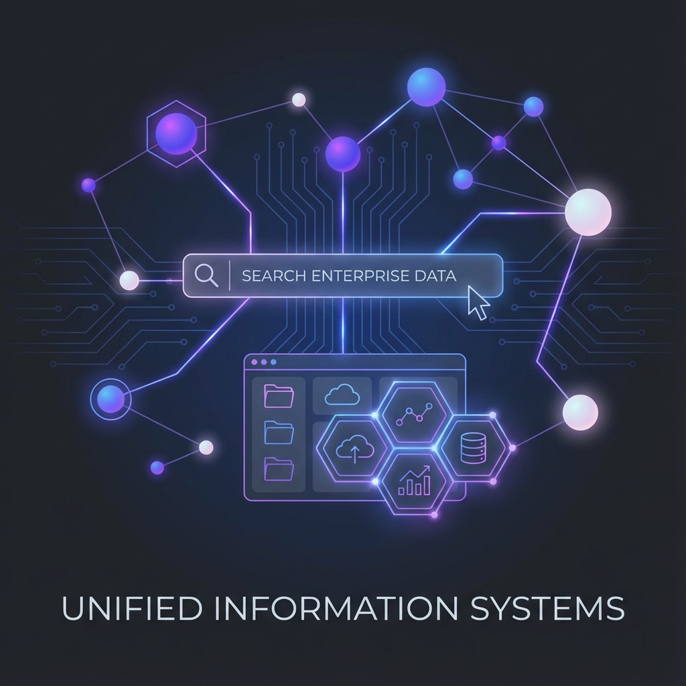
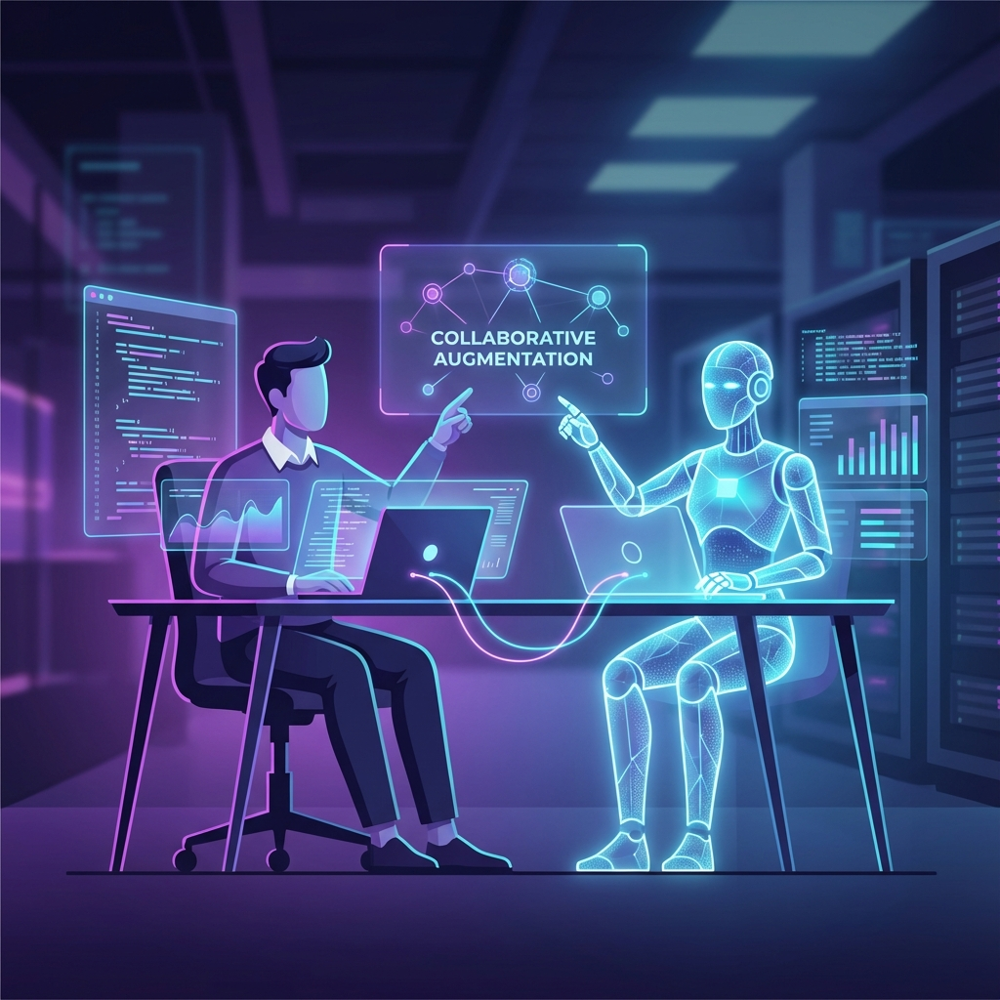
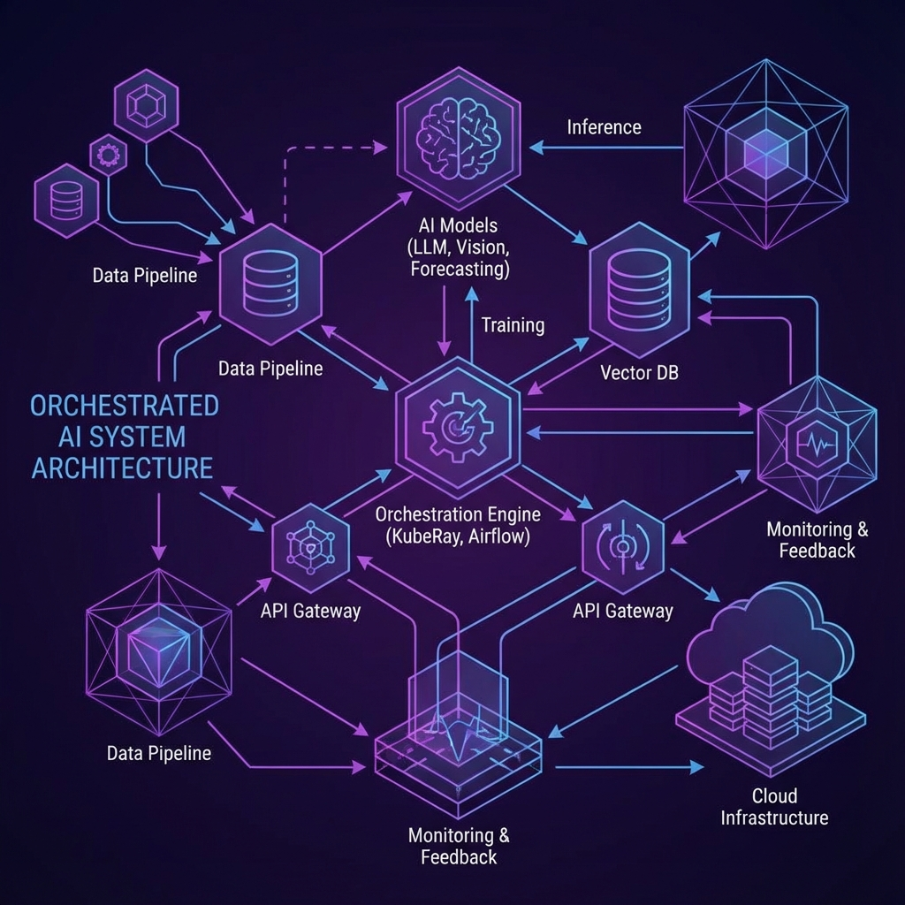
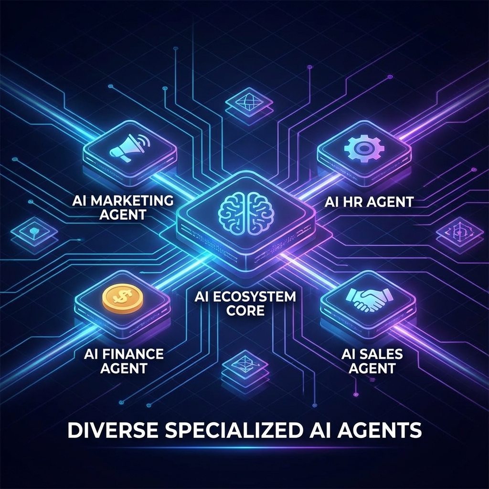

The daily deluge of news about Artificial Intelligence can be both exhilarating and exhausting. We are constantly presented with visions of a future defined by super-intelligent machines, a narrative that oscillates between utopian promise and dystopian fear.
This relentless focus on far-off possibilities, like Artificial General Intelligence (AGI), often obscures the more immediate and practical transformations happening right now. Fortunately, beyond the hype, a more nuanced reality is emerging. By synthesizing insights from two recent Google Cloud publications—one, a practical handbook detailing ten specific AI agents, and the other, a collection of predictions from the industry's leading investors and technologists—we can get a much clearer picture of its true impact.
This article distills five of the most impactful and often counter-intuitive takeaways from this analysis. These realities cut through the noise to reveal where AI is creating value today and where it's headed tomorrow.
The Biggest Opportunity in AI Is… Surprisingly Boring
In an industry captivated by human-like AGI, the most immediate and profitable step in the AI revolution is surprisingly mundane: digital housekeeping. For decades, the frustrating inability to find information scattered across countless disconnected systems—documents in cloud storage, emails, customer data in CRMs—has been a quiet tax on productivity. Now, experts and practical guides agree that fixing this "enterprise data chaos" is not just a side benefit of AI, but its foundational prerequisite.
The "AI agent Work smarter." handbook states that the essential layer for all advanced agentic AI is a powerful, unified enterprise search. This insight is validated by early adopters like Gordon Food Service, who noted that giving employees access to unified enterprise intelligence translates directly to "better decision-making, and less legwork to discover information." This move from theory to practical ROI explains why seasoned experts see this as the primary area for immediate value creation. It means the first step in the AI revolution isn't about replacing people, but about finally fixing the long-standing, deeply frustrating problem of not being able to find the information needed to do a job effectively.
"The fastest ROI in AI is in agents, but the biggest opportunity is in enterprise search."
— Edo Liberty, Founder and CEO of Pinecone
Your AI Coworker Isn't Replacing You, It's Augmenting You
Contrary to the common fear that AI is coming for our jobs, the overwhelming expert consensus is that its primary role is to augment human capabilities, not replace them. This reframes AI not as an adversary that devalues human labor, but as a collaborative partner that elevates it. The goal isn't to create artificial employees, but to empower every human employee with better tools.
This principle is reinforced by numerous experts who emphasize that AI tools are being designed to handle the "gruntwork." We see this theory in practice throughout Google's handbook, which centers on helping employees "get more done." A sales team, for example, can deploy an agent to automatically locate sales playbooks and monitor customer requests. This automation frees the team to dedicate their energy to what they do best: strategy, creativity, and nurturing the relationships that drive the business forward.
"It's crucial to understand that AI should be viewed as a tool to augment our capabilities, not replace them."
— Arvind Jain, Founder and CEO of Glean
The "Prompt and Pray" Era Is Already Over
For most people, interacting with AI means typing a question into a chat window. But for serious enterprise applications, this simple "prompt and pray" approach is already obsolete. Businesses require a level of reliability and accuracy that a single language model, which can sometimes produce "utter nonsense," simply cannot guarantee.
The real value is being generated by robust "AI systems" that orchestrate multiple models, specialized tools, and data sources to produce a reliable outcome. This isn't just a theoretical shift; Google's "AI agent Work smarter." handbook provides a perfect blueprint of what this looks like. The Marketing Agent example isn't a simple text generator; it's a true AI system that connects to marketing platforms, analyzes performance data, and then creates tailored content—a multi-step, multi-tool process far beyond a simple prompt. While the public-facing interface for AI is often deceptively simple, real-world business value comes from the complex, behind-the-scenes engineering of these larger systems.
"The early days of 'prompt and pray' AI—simply feeding a language model a prompt and hoping for a good result—are over. To meet the critical demands of enterprises, we need robust 'AI systems' that orchestrate multiple models and tools for reliable results."
— Yoav Shoham, Co-Founder of AI21 Labs
The Real Disruption Isn't the Tech, It's the Business Model
Perhaps one of the most surprising predictions from industry leaders is that AI's most profound impact won't be on software features, but on the fundamental business model of the software industry itself. For decades, the "per-seat" subscription model has dominated enterprise software. AI is poised to change that completely.
Social Capital CEO Chamath Palihapitiya predicts that the traditional software industry will shrink as AI empowers companies to build their own custom solutions, rather than relying on inflexible off-the-shelf SaaS products. This creates a new competitive landscape where AI startups can challenge incumbents not just on product, but on the entire economic model. The decades-long dominance of the per-seat license could give way to new approaches like value-based or usage-based pricing, which align the cost of a tool with the actual value it delivers. This represents a radical change in the economics of technology, shifting the entire field of competition.
"Your competition is no longer against the incumbent, it is against the incumbent's business model. I'm sure that the final business models for AI are not yet pioneered."
— Jerry Chen, Partner at Greylock
Forget One AI to Rule Them All; The Future Is an Army of Specialists
The pursuit of a single, all-powerful Artificial General Intelligence (AGI) is a compelling sci-fi narrative, but it's a distraction from where real business value is being created today. The practical application of AI in the enterprise isn't about building one master brain; it's about deploying a diverse team of specialists.
The "AI agent Work smarter." handbook perfectly illustrates this reality by detailing ten distinct types of agents, each designed for a highly specific business function like marketing, finance, HR, or sales. This real-world application is the practical proof of what experts like LangChain CEO Harrison Chase argue in theory: "Vertical-specific beats general purpose." It also aligns with the advice Ohalo Genetics CEO David Friedberg gives to startups, urging them to focus on solving "specific niche problems with a lot of depth." The implication is clear: the future of AI in the workplace looks less like a single, god-like intelligence and more like a diverse, interoperable ecosystem of specialized tools, each expertly trained for its domain.
The Real Question We Should Be Asking
Moving beyond the hype, a clearer picture of the AI revolution comes into focus. It's a revolution built on augmentation, not replacement. Its value is unlocked by robust, complex systems solving real-world—and often unglamorous—business problems. And its impact is proving to be as much economic as it is technological, challenging long-held assumptions about how we build, buy, and use software.
As these powerful tools become more integrated into our work, the most important question isn't "What can AI do?" but "What will we choose to do with the time and creative energy it gives us back?"